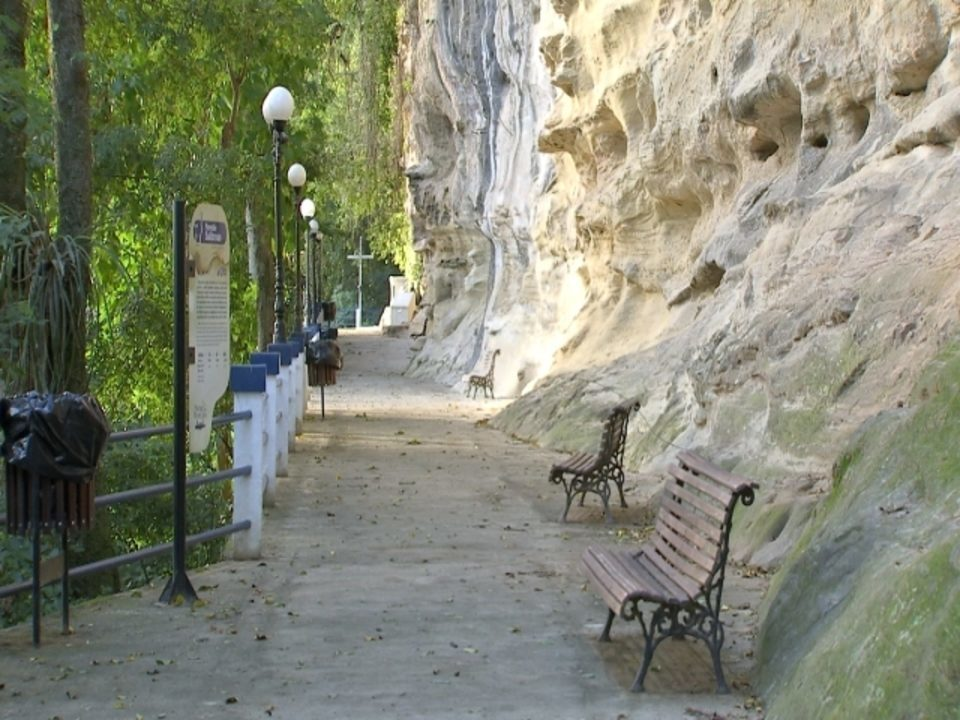

Parque das Monções
Tombado pelo Condephaat, está localizado à margem esquerda do rio Tietê, onde partiam as expedições monçoeiras para as regiões auríferas recém descobertas em Mato Grosso e Goiás. É um espaço construído para a celebração da memória de um glorioso capítulo do bandeirismo paulista. Inaugurado em 26 de Abril de 1920 pelo então governador, Altino Arantes, é composto por uma grande área verde ao redor do antigo Porto de Araritaguaba.